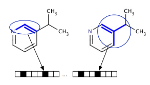

Fingerprints
Michał Nowotka
ChEMBL Group
EMBL-EBI
Recap
- Key-lock model (hand-glove)
- Rational drug discovery
- Structure-based drug desing
- Ligand based drug design
Rational Discovery
- Traditional drug discovery rely on trial-and-error
- Rational discovery is a "reverse pharmacoloogy"
- Modulation of target may have therapeutic value
- Evendence of linkage between the target and disease needed
- Target must be druggable
Assays
- Suitable target is clone, produced and purified
- Purified protein is used to establish a screening assay
- 3D structure of the target may be determined
- Evendence of linkage between the target and disease needed
- Target must be druggable
Ligand
- Candidate compound should be drug-like
- High binding affinity
- Selectivity
- Oral bioavailability
- Stability
Ligand cd
- Minimal toxic effects
- Lipinski's Rule Of Five
- High potency (high value of pIC50)
- Adverse effects?
The goal
The most fundamental goal in drug design is to predict whether a given molecule will bind to a target and if so how strongly.
Methods?
- Linear regression, classification (QSAR)
- Machine learning (target prediction)
- Neural networks
- Data/relation mining (assays, documents)
- Exproring screening chemical spaces
Fingerprints
- Abstract representation of certain structural features of a molecule
- A way of encoding the structure of a molecule
- Series of bits
- Presence or absence of particular substructures in the molecule
Fingerprints

- Assumption: molecules that are similar have a lot of fragments in
common
- No “right” answer for defining similarity: no canonical definition
of similarity
- Best fingerprint depends on data set
- There are many different fingerprints available
Interesting things
The MinHash min-wise independent permutations locality sensitive hashing scheme may be used to efficiently compute an accurate estimate of the Jaccard similarity coefficient of pairs of sets, where each set is represented by a constant-sized signature derived from the minimum values of a hash function
Dice coefficient s not a proper distance metric as it does not possess the property of triangle inequality.
Substructure?
- Once we know how to compute distance we can compute similarity
- But how to implement substructure search?
- C1 is a subgraph of C2 if and only if every bit set in FP1 is also set in FP2
- Use the above to screen out majority of compounds
- Use slover but more accurate subgraph isomorphism alorithms
Fingerprint types
- RDKit
- Morgan/Circular
- Substructure based fingerprints FP3, FP4 and MACCS
- Many more
RDKit Fingerprints Algorithm
- For each subgraph of length [minPath-maxPath] bonds:
- Generate hash for the path using bond types and each bond’s neighbor count
- Seed random-number generator with hash
- Generate nBitsPerHash random numbers between 0 and fpSize and set the corresponding bits
- [optional]: “fold” fingerprint to target density of tgtDensity of bits set
Morgan fingerprints
- For each atom take a neighborhood of specified radius
- Encode each neighborhood
- Typical radii: 0-3 bonds
Noel O'Boyle
“Which is the best fingerprint for medicinal chemistry?”
- Robust benchmarking framework
- Dataset from ChEMBL molecules
- Benchmarks substructure and similarity